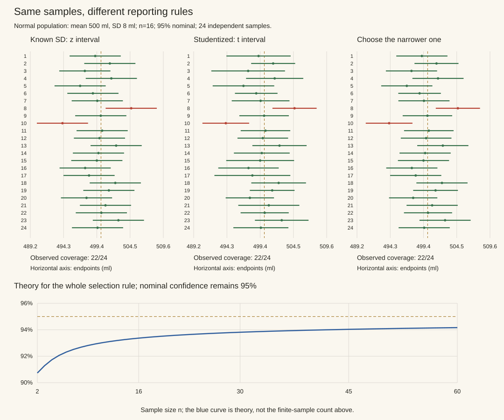

本页目录
统计 III · 区间估计
同一规则重复造出的区间，有多少能覆盖真实参数？本页从正态抽样定理推导均值与方差区间，再用“事后选窄者”展示选择如何改变覆盖，最后推导比例的 Wilson 区间与有限样本边界。
学习层：区间先说清“谁在随机”
1. 具体情境：工厂的装填线要报告什么？
一条饮料装填线的目标是平均装入 \(\mu=500\) ml。工程师抽取 \(n\) 瓶，得到样本均值与样本标准差，然后交付一个 95% 区间。管理者问：“这个已经算出来的区间，有 95% 的概率包含真实 \(\mu\) 吗？”
这里有三件事容易被压成一句口号：
- 区间端点会随重复抽样改变，\(\mu\) 是固定但未知的参数；
- \(\sigma\) 已知时，标准化均值用 z；\(\sigma\) 未知且正态模型可信时，用 t，并把自由度记成 \(n-1\)；
- 若看完数据才在 z、t 或多个分析之间挑最有利的一项，选择规则也成为随机过程的一部分，原来的名义覆盖率不能照抄。
2. 先预测：再打开覆盖账本
本页的实验固定真均值 \(\mu=500\) ml，并用固定 seed 重复抽样。揭示前先判断：
- “95% 置信”是一个已观测区间含 \(\mu\) 的后验概率，还是重复抽样下方法的长期覆盖率？
- 已知方差与未知方差时，z 和 t 如何对应？小样本下 t 的尾部为什么更厚？
- 看过每个样本后再挑较窄的区间，是否仍自动拥有原来的覆盖保证？
3. 正式桥：枢轴量把随机性放在区间上
设样本独立同分布于正态总体、\(n\ge2\)、真实方差非零。若 \(\sigma\) 已知，
若总体正态而 \(\sigma\) 未知，
这两个预先固定构造满足 \(P_\mu\{\mu\in C(X)\}=1-\alpha\)。在这里，覆盖事件是“随机区间是否罩住固定参数”。把一次已经实现的区间再读成 \(P(\mu\in I\mid I)=0.95\)，就把频率学派的构造偷换成了需要先验的可信区间。
4. 定理、迁移与失败边界
- 覆盖率是规则的长期频率。重复抽样、每次按同一规则造区间，约 \(1-\alpha\) 的区间覆盖真值；它不是给本次已观测区间分配的含参概率。
- z 与 t 不是装饰换字母。已知 \(\sigma\) 才有 z 枢轴；用样本 \(S\) 替代未知 \(\sigma\) 会引入额外随机性，正态小样本的精确枢轴是 t。大样本时 t 才逐渐接近 z。
- 选择后推断会改问题。先看数据、宽度、显著性或多个区间，再挑一个报告，会让选择事件进入抽样分布；需要预先规定规则、做选择校正或使用同时覆盖方法。
- 模型条件不能被一次漂亮图替代。t 区间的精确小样本说法依赖正态性；非正态、相关抽样、重尾或停止规则改变时，应换稳健、重抽样或设计匹配的构造。
5. 动手实验：揭示前隐藏结果，揭示后联动参数
实验只在提交三项预测后显示模拟区间、覆盖计数和表格。揭示后可切换置信水平、样本量、方差状态与分析规则；图和表同步重算。固定 seed 让同一参数下的比较可复核，但有限重复次数不会把频率定理变成一次证明。
JavaScript 失效时的静态 fallback：默认示范取 \(\bar x=503\)、\(n=16\)、\(S=6\)、置信水平 95%。若 \(\sigma\) 已知且取 \(\sigma=8\)，z 区间为
若 \(\sigma\) 未知且正态模型可信，\(t_{15}\approx2.131\)，t 区间为
| 读法 | 静态结论 | 不要偷换成 |
|---|---|---|
| 95% 覆盖 | 同一规则重复造区间，长期约 95% 覆盖 \(\mu\) | 已观测这一个区间含 \(\mu\) 的概率是 95% |
| 方差已知 | 用 z，标准误是 \(\sigma/\sqrt n\) | 用 \(S\) 后仍声称 z 枢轴精确 |
| 方差未知 | 正态小样本用 t，自由度 \(n-1\) | 任意非正态小样本都自动适用 t |
| 事后挑窄 | 选择进入分析规则，名义覆盖率需重新校准 | 选择只影响审美、不影响概率 |
1. 置信水平属于一条可重复执行的规则
令 \(C(X)\) 为从样本构造的随机集合，真实参数 \(\theta\) 固定。一个有限样本、置信水平至少为 \(1-\alpha\) 的构造要求
若所有参数处都取等号，才称精确等覆盖；离散数据的非随机化区间常只有“至少”。渐近区间则需说明是对每个固定内点参数有覆盖趋向 \(1-\alpha\)，还是还证明了关于参数的一致保证。前一种结论不能直接搬到随 \(n\) 逼近边界的参数序列上。
频率学派的概率计算发生在观测前：区间随数据改变，参数不改变。观测后区间已经确定，频率学覆盖率本身不能给这个具体区间赋予“含真值的后验概率”。贝叶斯可信区间则通过先验和似然得到后验，再谈条件概率；两种区间有时数值相同，但保证来源不同。
95% 也不意味着每20个区间恰好漏掉1个。若20次独立重复且各次漏盖概率为0.05，漏盖数服从 \(\operatorname{Bin}(20,0.05)\)，期望为1；一次都不漏的概率为 \(0.95^{20}\approx0.3585\)。实验中经验覆盖率本身也是一个有波动的统计量。
区间的宽度必须和覆盖、抽样条件一起读；一个总是输出零宽区间的规则很窄，却可能几乎从不覆盖。优先报告参数、单位、样本设计、构造方法和适用条件。
2. 枢轴量与检验反演：两条相连的构造路线
枢轴量 \(G(X,\theta)\) 可以含未知参数，但其分布不依赖未知参数。先为其选择已知概率的区域，再把事件反解成参数集合。例如
只在 \(G\) 的分布确实为标准正态时精确成立。我们统一用左尾分位数 \(q_u=\inf\{x:F(x)\ge u\}\)；对本文连续且严格递增的分布，\(F(q_u)=u\)。离散分布通常不能把分位数不等式写成等概率。
更一般地，对每个候选参数 \(\theta_0\) 给出一个水平不超过 \(\alpha\) 的检验，令 \(C(X)\) 收集所有未被拒绝的 \(\theta_0\)。因为真实参数被排除恰好等于检验错误拒绝，立即得到覆盖至少 \(1-\alpha\)。所得置信集可能不对称、不连通或无界，不必总是“估计值 ± 标准误”。这一关系见 Berkeley 的检验与置信集讲义。
3. 正态抽样：先推导，再整理成表
以下设观测 i.i.d. \(N(\mu,\sigma^2)\)，\(\sigma^2>0\)，\(n\ge2\)，且 \(S^2=(n-1)^{-1}\sum_i(X_i-\bar X)^2\)。抽样定理的证明见 上一页之前的抽样分布课。
均值区间：随机标准误为何改变分位数？
若 \(\sigma\) 已知，\(Z=\sqrt n(\bar X-\mu)/\sigma\sim N(0,1)\)。把 \(-z\le Z\le z\) 乘以正数 \(\sigma/\sqrt n\)，再把 \(\mu\) 移到中间，得到
若 \(\sigma\) 未知，\(T=\sqrt n(\bar X-\mu)/S\sim t_{n-1}\)，同样代数得到
这里“未知”描述分析者拥有的信息，不是说总体没有真实方差。\(t\) 区间增加的尾部来自 \(S\) 的随机性；\(n=2\) 的自由度1也有合法分位数，只是区间可能很宽。已知 \(\sigma\) 时也能计算 \(t\) 区间，但若看过样本才在两者之间选择，须重新分析整条规则。
方差区间：取倒数时上下界为何交换？
令 \(\nu=n-1\)，\(Q=\nu S^2/\sigma^2\sim\chi^2_\nu\)。其正分位数满足
除以正数再取倒数会反转大小关系，所以
若要的是标准差 \(\sigma\)，对两个非负端点分别开平方。区间不对称来自反演与卡方分布，不能改成同半宽来追求外观对称。
两样本：区分等方差、异方差和配对
两组独立正态样本，样本量 \(n_1,n_2\ge2\)。若总体方差相同，定义
则 \((\bar X-\bar Y)-(\mu_1-\mu_2)\) 除以 \(S_p\sqrt{1/n_1+1/n_2}\) 后，精确服从 \(t_{n_1+n_2-2}\)；均值差区间为该估计值加减相应分位数乘标准误。
不假设等方差时，Welch 区间常用 \(SE=\sqrt{S_1^2/n_1+S_2^2/n_2}\) 以及
然后用 \(t_{1-\alpha/2,\hat\nu}\)；一般这是近似，不能与等方差情形的精确 \(t\) 定理混称。若数据是同一对象上的配对观测，应先研究差值 \(D_i=X_i-Y_i\) 的分布；组间相关进入差值方差，不能假装独立。
对于真实方差比 \(r=\sigma_1^2/\sigma_2^2\)，枢轴量是 \((S_1^2/S_2^2)/r\sim F_{n_1-1,n_2-1}\)。记 \(R=S_1^2/S_2^2\)，区间为
未经除以 \(r\) 的样本方差比，只有在 \(r=1\) 时才直接服从该 \(F\) 分布。
4. 选择较窄者：两个合格方法的交集仍会漏盖更多
实验的所有总体都是正态，真实均值500 ml、标准差可调。选择实验只在 \(\sigma\) 已知时开放，让 \(z\) 和 \(t\) 两个候选都能从可用信息计算；若 \(\sigma\) 未知就用真实 \(\sigma\) 构造候选，那是在给分析者额外答案。
两个候选有同一个中心 \(\bar X\)，所以选较窄区间等于取 \(C_z\cap C_t\)。要覆盖真值必须两者都覆盖。各自覆盖95%并不能使交集也覆盖95%；也不能算成 \(0.95^2\)，因为这两个覆盖事件共享同一份数据。
设 \(U=\sqrt n(\bar X-\mu)/\sigma\sim N(0,1)\)，\(V=(n-1)S^2/\sigma^2\sim\chi^2_{n-1}\)，两者独立。令 \(\nu=n-1\)、\(z=z_{1-\alpha/2}\)、\(t=t_{1-\alpha/2,\nu}\)。选窄者的覆盖事件为
对 \(U\) 条件化，从已知 \(z\) 覆盖事件中减去被 \(t\) 区间额外排除的部分，得
有限 \(n\) 时积分严格为正。95%名义水平、\(n=16\) 时约为 93.3687%。实验把这个理论值和有限 \(R\) 经验频率分开；理想独立重复下频率的标准差为 \(\sqrt{C(1-C)/R}\)。同一随机种子保留相同原始标准正态样本，使改变规则和置信水平的比较可复核；增加 \(R\) 保留较短序列的前缀。

预先写下“总是选窄者”并不会恢复95%，因为整条规则仍依赖数据选择；要么使用已经校准的整条规则，要么为目标提供同时覆盖保证。可选停止也类似：固定样本量区间不自动成为任意时点都有效的置信序列。
5. 非正态与比例：近似的边界要能看见
对 i.i.d. 总体、\(0<\sigma^2<\infty\)，\(S^2\xrightarrow{P}\sigma^2\)，CLT 与 Slutsky 给出 \(\sqrt n(\bar X-\mu)/S\xrightarrow{d}N(0,1)\)。这提供渐近均值区间，不能保证任意小样本精确覆盖；重尾下收敛可能慢，相关数据需要匹配依赖结构的标准误。无条件地换成 bootstrap 也不是保证。
从 score 不等式推导 Wilson 区间
若 \(K\sim\operatorname{Bin}(n,p)\)，\(\hat p=K/n\)，Wald 区间代入估计标准误，得到 \(\hat p\pm z\sqrt{\hat p(1-\hat p)/n}\)。当 \(K=0\)，它退化成 \([0,0]\)；若真实 \(p>0\)，这种样本一定漏盖。以 \(n=10,p=0.01\) 为例，覆盖率至多 \(P(K\ne0)=1-0.99^{10}\approx9.56\%\)，远不是95%。把负端点裁剪到零不能修复这个问题。
Wilson 区间保留候选真值 \(p\) 的方差，反演 score 接受区域
展开得到 \((n+z^2)p^2-(2n\hat p+z^2)p+n\hat p^2\le0\)，解二次不等式：
端点位于 \([0,1]\)，\(K=0\) 时上界为 \(z^2/(n+z^2)>0\)。但 score 用的是近似正态临界值，因此 Wilson 也不是任意有限 \(n,p\) 处都保证覆盖至少名义水平的“精确区间”。真实覆盖由有限求和
给出，随着候选 \(p\) 穿越某个端点会跳变。需要有限样本保证时，可反演精确二项检验，例如等尾 Clopper–Pearson 区间；它通常保守，“精确”指不靠大样本近似，并非处处恰好等于95%。公式与二项反演参照 NIST 区间说明。
测试集准确率只有在测试项独立、同分布并代表目标总体时才直接进入这个二项模型。两个模型在同一测试集上比较，应考虑每一题的配对结果。两个边际误差条重叠不能直接判定“差别只是噪声”，不重叠也不能替代分析目标、配对结构与多重比较的检查。
6. 设计样本量与三道迁移题
在已知 \(\sigma\) 的正态均值模型中，要求双侧区间半宽不超过 \(d>0\)，需
把半宽减半需要约四倍样本。未知 \(\sigma\) 时需设计值或额外的精度概率目标，随机 \(S\) 不保证每次达到半宽；比例的最坏方差 \(p(1-p)\le1/4\) 则给出常用的近似规划公式，不能抹掉实际区间方法的覆盖问题。
题1： 正态独立样本 \(n=16,\bar x=503\) ml、\(s=6\) ml。求均值与方差的95%区间，并给标准差区间。
展开推导
\(t_{0.975,15}\approx2.1314495\)，所以均值区间为 \(503\pm2.1314495(6/4)\)，约 \([499.8028,506.1972]\) ml。\(\chi^2_{0.975,15}\approx27.48839\)、\(\chi^2_{0.025,15}\approx6.26214\)，方差区间为 \([540/27.48839,540/6.26214]\approx[19.6447,86.2325]\) ml²。分别开平方，标准差约为 \([4.4322,9.2861]\) ml。方差端点要交换分位数，且单位也要平方。
题2： 10次独立 Bernoulli 观测全为0，求95% Wilson区间。它的非零上界意味着什么？
展开推导
\(\hat p=0\)，\(z\approx1.959964\)，Wilson区间为 \([0,z^2/(10+z^2)]\approx[0,0.277533]\)。它表达有限数据仍容许正的成功率；“一次没看到”不等于“总体概率是零”。作为对照，双侧等尾精确二项区间上界解 \((1-p_U)^{10}=0.025\)，即 \(p_U=1-0.025^{1/10}\approx0.308497\)。不同构造的保证与宽度不同，不能混用上界和方法名称。
题3： 在正态模型中，预先规定使用两个各为97.5%的双侧均值区间，报告它们的交集；能否保证至少95%覆盖？需要两者独立吗？
展开推导
漏掉交集等于至少一个候选漏盖。由并集界，\(P(\mu\notin C_1\cap C_2)\le0.025+0.025=0.05\)，因此至少95%覆盖，不要求独立。由于同中心区间的交集等于较窄者，这给出了本页选择问题的一种保守校准。关键是每个候选对所有参数确实有97.5%保证，而且候选集合和整条报告规则已被纳入分析；任意增加候选数量不能继续照抄这个数值。
下一页：假设检验，把覆盖事件与拒绝事件联系起来。